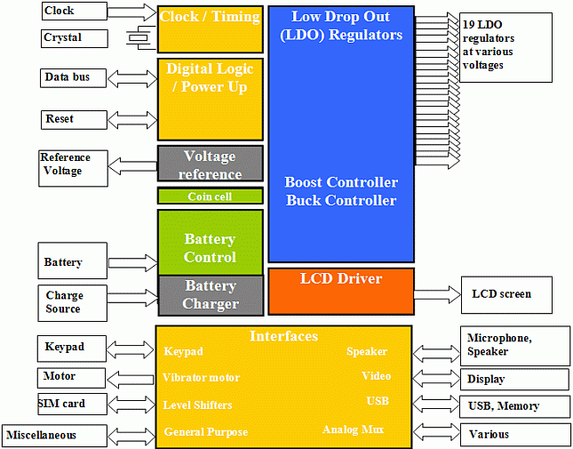
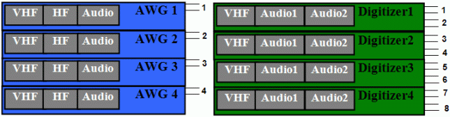
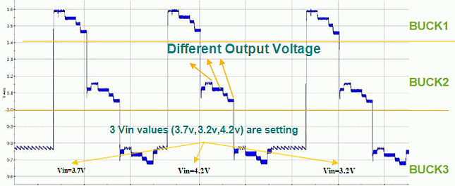
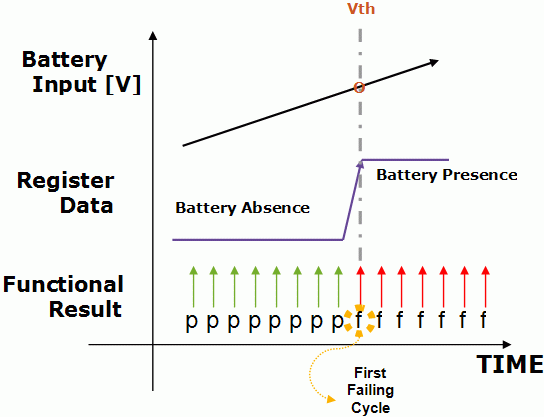
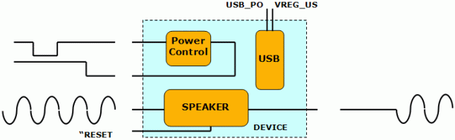
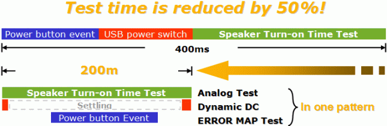

Using V93000 Test Time Reduction techniques to test 8 PMICs in 6 seconds
Pascale Cowie, Aether Lee, Sophia Zhang, Donald W. Blair, Verigy
Paper-ID: 120403 April 2010
Abstract
Power Management ICs are becoming more pervasive, especially in the battery operated consumer market place. The trends for PMICs are higher levels of integration to keep pace with growing complexity and features of new products, and lowering power consumption to improve the battery life of the consumer appliance. On the surface this testing seems like it should be a simple DC exercise. In reality this becomes a technical challenge in terms of combining DC, digital and analog mixed signal functionality and an economic challenge to keep the cost-of-test (COT) to a minimum. Both of these challenges are manifest in the high end standalone PMIC this paper addresses: over 1000 production tests requiring all of the tester functionality mentioned above and test time reduction techniques used to minimize the COT.
Introduction
This paper will explore an 8 site Power Management IC (PMIC) production test program that runs in 6 seconds on the V93000 including the trim of the device. It will examine the test time reduction techniques used to achieve this: including a breakdown of the test blocks and their respective test times. Most of the techniques were done as a pre-determined plan to achieve the best test time possible, thus eliminating a huge second pass effort to reduce test time. The factors that will be explored are: using DC Scale resources and capitalizing on the DC Dynamic capabilities; using the Dynamic-to-Static (D2S) framework to quickly generate fast running vectors; laying out the DUT board to maximize DC Scale and Multi-Band AV8 parallelism, and using the Error Map feature to measure all of the propagation delay tests in parallel. Additional TTR techniques will be looked at that could further reduce the test time.
Block diagram of the PMIC application
The device-under-test block diagram is shown in Figure 1. Its end use application is a rich featured cell phone. The battery control sections detects each incoming power source and selects the best one, while the charger section will charged the main battery if needed and if an external source is present. The voltage reference contains the band gap reference which is trimmed for greater precision and is stable for any of the regulators to use. The clock and timing circuits are provided to the digital logic and power up which does the synchronization and determines the power up, power down and functionality for the DUT. The low drop out regulator section provides the various power domains that the application itself will need. They have a very small voltage difference between the input and output voltage which allows a greater range of voltages at the input. They also contain buck (step down) and boost (step up) functions to get the correct input voltages for the LDOs. The LCD driver drives the display of the phone. The interfaces section provide input/output device interfaces, provides various ways to get data (digital, video and audio) on and off chip and provides translation between different levels of signals [1].

Figure 1. PMIC block diagram
The V93000 system configuration to test 8 of the PMICs consists of a Small Test Head (DUT Scale Interface) with
- 576 digital pins ( 9 X PS400 digital cards)
- 192 high precision DC pins ( 6 X VI32 cards)
- 32 DPS DC pins ( 1 X DPS32 card)
- 4 source/ 8 digitizer analog mixed signal pins (1 X MB AV8)
Overall test time/efficiency and test time breakdown by category
Table 1 shows the test time breakdown by test block type. These are the octal site test times (eight devices were tested in the shown test times). Some tests were done in a semi-parallel fashion (4 sites at a time) while other tests were done in full parallel. The selection of which tests were done which way was made by the resources available in the system configuration to test this application. Therefore, some tests were more efficient than others, but the overall efficiency for the entire application was 92.8%
Test name |
Octal ms |
Test name |
Octal ms |
Test name |
Octal ms |
|---|---|---|---|---|---|
Continuity |
55.2 |
V charging threshold |
55.6 |
Speaker AC |
653.9 |
Pre ON status |
19.4 |
V charger charging |
139.6 |
Speaker DC |
390.0 |
Digital Current Leakage |
37.2 |
V charge |
49.8 |
Video DC |
17.6 |
Voltage Regulator Leakage |
86.2 |
V Battery Threshold |
78.7 |
Video AC |
85.4 |
IDD powered off |
34.7 |
V Coin Battery |
55.0 |
Temperature Sensor |
135.8 |
IDD power down clock |
50.8 |
Low voltage lockout |
44.6 |
Keypad delay |
120.9 |
PowerUp |
58.3 |
Microphone Bias |
37.2 |
Drivers |
97.6 |
PowerUpMeas |
36.0 |
Real Time Clock |
36.4 |
Analog multiplexer output |
91.5 |
IDD powered up |
44.8 |
USB Transeiver Power Pins |
36.2 |
Soft Reset |
30.9 |
Master Band Gap PreTrim |
64.8 |
Dynamic Regulators |
792.3 |
Serial Bus |
27.6 |
Master Band Gap Trim |
137.5 |
General Purpose Interface |
735.5 |
Set Limits |
1.4 |
Master Band Gap After Trim |
55.3 |
Analog multiplexer amplifier |
456.5 |
|
|
V max Pre Trim |
46.7 |
USB Transceiver |
291.8 |
|
|
V max Trim |
84.7 |
Clock pulse delay |
194.5 |
Total test time |
6.0 sec |
V max Post Measurement |
47.7 |
Power down clock frequency |
183.0 |
Multi-site efficiency |
92.8 % |
V Battery Detect |
57.7 |
Clock start |
151.9 |
Trim (included) |
0.6 sec |
Effective parallel layout of the V93000 resources to maximize parallelism
All of the resources on the V93000 are designed to enable efficient concurrent test, but they are configured differently depending on the resource. To minimize the cost of the tester, it is important to assign the tester resources, based on DUT pin capability and the test requirements. For example, use the PPMU for lower power and wider accuracy needs. In contrast, use the VI32 or DPS32 if you want more power and enable faster test times via DC-dynamic. With its new DC-scale instruments (DPS32 and VI32) and its legacy instruments, the V93000 now offers plenty of hardware options to superbly fit the needs for PMIC applications. Also the density is high with 32 channels on DC-scale and 64 channels on PS400 cards. The tester is extremely capable to provide enough DC resources for PMIC applications with 16 sites and more.
Effective parallel layout of the DPS32 resources
Three power supplies are present per device-under-test (DUT): Vbattery, Vcharger and VUSB.
One DPS32 card is used to power-up all 8 sites with 4 channels used per site. Vbattery provides power to the whole PMIC so 2 DPS32 channels are ganged on Vbattery to provide up to 2.4A at 3.6V.
The V93000 can provide plenty of power by ganging DPS channels, but only limited Vbattery power is allowed by the DUT in order to minimize overheating of the device and keep proper operation. This limitation affects how many pins or PMIC blocks can be tested in parallel.
V-charger tests require sweeping the power supply voltage. DC-dynamic is available on any DC Scale resource, including the DPS32 and is well suited to create sequencer‑controlled fast voltage ramps.
Effective parallel layout of the VI32 resources
The VI32 card is available for DC pins which need more power than the PPMU can provide.
In this case, the DUT has 23 voltage regulators (including LDOs, Buck and Boost switching regulators), 5 current or voltage drivers and 4 special DC pins which need higher accuracy.
These pins also require positive and negative continuity tests so the VI32 was chosen over the DPS32 which cannot force negative voltages.
As mentioned above, all these pins cannot get tested at the same time in order to minimize power spikes on the DUT. For example, all 5 drivers can be tested in parallel. Also 22 voltage regulators can be tested at the required load in two steps (92 regulators tested at once in octal site). The test time is not affected significantly and the cost of tester is minimized, when muxing two DUT pins with one VI32 channel. In the octal site configuration, 6 VI32 cards are used to provide 192 DC channels.
Effective parallel layout of the PPMU resources
Many pins require less power and can be tested with basic features. The DUT has 22 general purpose pins and 24 digital or DC pins which fit these minimal requirements. Moreover, the general purpose pins can act as current source and require up to 50mA current measurement capability. In this case two PS400 Digital channels are needed to serve one general purpose pin.
Each PS400 channels has a dedicated PPMU which allows maximal parallelism, for example all 176 general purpose pins are tested at once on the octal configuration.
PS400 cards provide 64 channels so the octal configuration requires 9 PS400 cards (576 channels).
Effective parallel layout of the MBAV8 resources

Figure 2. Multiband AV8 Source/Measure configuration and connections
The Multi-Band Audio/Video 8 (MBAV8) Source/Measure resource is configured to test 4 or more devices in parallel as shown in Figure 2 for one card. The digitizer (measure) actually has two inputs possible for audio digitizer connections so this can make 8 measurements in parallel. If this device used monaural audio then all 8 devices could have been tested in parallel. However, it had stereo input and output audio connections, so 4 devices at a time could be tested in parallel. Any of these connections can be either single ended or differential.
Test time reduction techniques used in this program
Several key techniques were applied to this test program: "Dynamic DC" to optimize DC measurements, "dynamic-to-static (D2S) framework" to minimize the effort of pattern development, and "error map test" to reduce the overhead of data uploads.
Dynamic DC
The idea of dynamic DC measurement is to define changes in forcing values and/or occurring measurements as events and to anchor them to a point in a pattern. The execution of a dynamic DC measurement is as simple as a functional test. The results of measurements are stored in the memory per channel and can be read back later [2][3].
The result of measurements can be uploaded by calling a specific API in the test method. The API uploads all samples of all involved DC Scale pins across all sites in one shot. Another API can then retrieve measured values for each pin of interest for a specific site from the cache. The scheme hence reduces the uploading overhead.
The first application example of dynamic DC for this PMIC device is called "one-time-running" for voltage regulators. The term, "one-time-running", means that various kinds of test parameters of regulators (LDO and DC/DC) within one simple pattern run. All the register setups, measurements, and capture actions for different regulators can be executed in parallel during one simple pattern running. As a result, total test time is significantly decreased.
Dynamic DC makes this idea real, and D2S-framework perfects the implementation. Several hundreds of test parameters for all 23 regulators (LDO, BUCK and BOOST) can easily be merged into 1 to 3 pattern runs. After these pattern runs, hundreds of results with high accuracy are retrieved at one time. Also, synchronous measurement has high repeatability since the measurements always happen at exactly the same time/cycle. It implies less correlations effort and better accuracy.
An example for "one-time-execution" is shown below in Figure 3. There are 3 BUCKs which share one Kevin-sense pin internally. With "one time running", in a very short time (about several tens of milliseconds), 40-50 parameters can be derived after a simple pattern run.

Figure 3. A Buck Regulator Test by "One-Time Execution"
D2S Framework
A typical function block in a PMIC is register-controlled DAC for threshold voltage setting. For a 4-bit register, settings of 16 codes have to be tested. If there are several similar registers, and for every code a pattern has to be prepared, it will be very time consuming to do debug and very inefficient to maintain those patterns.
For this device, the "D2S framework" is used and this framework is a wrapper of vector edit API class, "VEC_LABEL_EDIT". [4] With D2S framework, register setting patterns can be generated dynamically at runtime and later be saved to static patterns. It reduces the effort of generating numerous but tiny patterns and also improves the readability of the program. See example code below.
ThresholdRegister.D2S_LABEL_BEGIN("THRESHOLD", D2SMode);
ThresholdRegister.write(0x0, 0x0);
ThresholdRegister.write(0x7A, 0x32);
for(int i=0;i<16;i++){
ThresholdRegister.write(0x23, i<<4);
ThresholdRegister.wait(0.000050);
ThresholdRegister.execLabel("dyndcTHRESHOLD_COMMON", 33);
}
ThresholdRegister.write(0x7A, 0x33);
for(int i=0;i<16;i++){
ThresholdRegister.write(0x23, i);
ThresholdRegister.wait(0.000050);
ThresholdRegister.execLabel("dyndcTHRESHOLD_COMMON", 33);
}
ThresholdRegister.D2S_LABEL_END();This example also shows the pattern re-use of dynamic DC. The pattern "dyndcTHRESHOLD_COMMON" is a simple pattern with only one event to measure the output voltage of a DAC. This pattern is called 32 times in the burst, so there will be 32 points recorded in the memory of the DC Scale channel for each site after one single parallel execution. These points can be retrieved afterwards individually for each site. That is to say, 32 test items can be done in one burst label.
Dynamic DC + D2s Framework
Trimming is an application taking advantage of D2S framework and dynamic DC. In this device, there 2 blocks containing DACs that need to be trimmed to specific voltages: one is band-gap and the other is charger voltage regulation. Both have several bits for fuse memory which need to be programmed for trimming by blowing the fuse in final test. The un-fused bit value is 0, and after blowing it becomes 1. Blowing a fuse is permanent.
The trimming process is described below:
- Perform pre-trim test to determine if the part in each site is fresh (not trimmed) or not
- For FRESH parts, use end-point method to find the closest code
- For FRESH parts, blow the fuse corresponding to the closest code
- Verify the trimming result
At step 2, only minimum and maximum codes are examined and the results are used to calculate the closest code which set the device to the target operating point. In multi-site testing, different codes may be found for different sites, and at the next step, the specific code needs to be written to the register (fuse blowing) of each site, which means different patterns have to be executed for different sites. If trimming patterns have to be executed serially, it will cost a lot of test time.
The V93000 is per-pin architecture, including the sequencer, so the TTR Solution for trimming is to dynamically initiate the pattern content per site, and execute the pattern in parallel to do fuse blowing. The D2s framework provides a very useful function called "prepareDynamicWriteLabel" which can dynamically modify the contents of the template label on a per-site basis, and later it can be executed by "executeDynamicWriteLabel". An example is shown below.
// closestCD array contains the searching trim code
// address is the fuse memory address
int address, closestCD[MAX_NUMBER_SITES];
D2SEEPROM_SBI myWrite;
D2S_SSBI &myMbgTrimWrite = D2S_SSBI::Instance();
ON_FIRST_INVOCATION_BEGIN();
current_site = CURRENT_SITE_NUMBER ()-1;
FOR_EACH_SITE_BEGIN();
myMbgTrimWrite.prepareDynamicWriteLabel(address, closestCD[current_site])
FOR_EACH_SITE_END();
myMbgTrimWrite.executeDynamicWriteLabel();
ON_FIRST_INVOCATION_END();The example above loops over all available sites and selectively changes the content of the template label for the focused site in the FOR_EACH_SITE block. Afterwards, it will execute the just modified template label for all sites in parallel, and hence registers will be programmed with site-specific values.
Error Map Test
In typical PMIC devices, the change of status of the device is often denoted by toggling certain bit(s) of a register. Some change caused by external forces, for example, absence of wall power, can also trigger interrupt(s). To detect toggled bits or interrupts, first failing cycle test utilizing error map is the most efficient methodology on the V93000.
Each digital channel on the V93000 holds its own error map memory. This error map memory can be configured to record failures while executing a functional test with zero overhead, and later the user can retrieve back the necessary failure information to minimize the data uploading time. Furthermore, since it is a per-pin resource, error cycles of each device at a different site can be recorded at the same time in one single functional test.
A code example led by line numbers follows. It uses the "EMAP?" firmware command to find the first failing cycle location, and then the time interval in between the trigger and the interrupt can be derived by following formula:
(Index of first failing cycle - index of referenced cycle) * Period of the vectors.
1 fwout << "DCGM FAIL,STRT,NONE;DCRP 0,(@@);DCRM EMAP,1,PFC,(@@);
DCRT RAM,(@@);CYRM CYCL,,(MSM_INT_N);EMBS 256,(MSM_INT_N); " << endl;
2 FUNCTIONAL_TEST();
3 FOR_EACH_SITE_BEGIN();
4 unsigned int iSite = CURRENT_SITE_NUMBER();
5 fwout << "PQFC " << iSite << ";
EMAP? PPIN,0,968,CYCL,1,pf,EOLY,byte,13,(MSM_INT_N)" << endl;
6 unsigned char* pData = (unsigned char*)fwresult[0].bdata();
7 unsigned int point_0;
8 for (unsigned int i=0;i<8;i++) point_0 = (point_0<<8) bitor *(pData+i);
9 t_ffci[iSite] = (point_0 - 128) * test_period;
10 FOR_EACH_SITE_END();For a brief explanation:
- Line 1 sets the error map to recode only failures with resolution in cycle.
- Line 2 executes the pattern.
- Line 5 queries the first failing cycle with the firmware command "EMAP?" for the site in focus.
- Lines 6 to 9 parse the information and calculate the time interval.
Though firmware commands are utilized in this example, starting from SmarTest 6.5, a new class of API, "ERROR_MAP_TEST", has been introduced to perform the same job.
Dynamic DC + D2s Framework + Error Map Test
Applying techniques described above, tests of interrupts or event detection are really easy to implement on the V93000.

Figure 4. Battery Detection Threshold Test
Here the battery detection threshold test is used as an example. As shown in the figure, the input voltage of the battery power supply pin is raised by a ramp generated from a DC Scale channel while the pattern is checking the output level of the indicator bit by compare-to-L actions. Toggling of the register data can be found by searching for the first failing cycle in the error map. Since DC Scale pins are fully synchronized with their digital partners, the threshold voltage of battery detection can be derived by mapping the cycle index to the forced value at the corresponding point of the ramp.
FlexDC for General Purpose Pins parallel testing
PS800 or PS400 digital channels have lower power compared to the DC-scale channels. But they offer low cost of test, thanks to their high density design. For the octal configuration, 176 general purpose pins were tested mostly in parallel in the octal configuration (only a small portion of the PPMU measurement values needed to get executed in series).
For this PMIC device, up to 50mA of current load had to be measured from each general purpose pin. In order to provide more power, the active load was combined with the PPMU. Using this technique it is possible for one PS800 channel to provide up to 75mA. On the PS400, the relays do not allow for the AC and PPMU relays to be ON at the same time, so 2 digital channels are needed. This design ganged two PS400 pins and combines the active load (30mA max) from one channel with the PPMU measurement capability from the other channel (20mA max) for a total of 50 mA.
Applying simple rules to FlexDC programming provides competitive test times with the PPMU:
- Minimize number of task executions:
- Combine tasks when common set-ups are shared
- Combine tasks between instruments
- Minimize relay switching
- Avoid slow tester periods (<1MHz)
By applying these simple rules, 420 datalogged values per site (3360 datalogged values on 8 sites); which may require 1 or 2 measurements, were executed in 740ms.
Additional test time reduction opportunities
Further actions were identified to reduce the test time even further but these were not implemented. They include software as well as hardware changes. For software, these include removing some duplicated tests in the trim section, minimizing the settling times before making a DC measurement, using pin groups instead of lists of pin names for faster caching and using a newer revision of Smartest (6.5.x) to reduce test method overhead. For hardware, these including a DUT board revision change that would allow using additional VI32 pins (2 per site) to take the place of per-pin PMUs (PPMUs) and using the DC Dynamic capability, using a PPMU instead of the MBAV8 PMU and adding another MBAV8 to allow full parallelism of the speaker audio and video tests.
Additionally, some of the tests can be grouped differently to allow device required setup times to run in parallel. These IP blocks are shown in Figure 5. The tests include: the interrupt interval after the keypad power button is pressed; delay time before a speaker turns on and USB power source switching leakage current. Each of these take 100-200 mS of wait time which adds up to a total of 400 mS. Since these blocks operate independently of each other they can be combined into one pattern and tested concurrently.

Figure 5. Semi-Concurrent Test for Several Independent Blocks
As shown in Figure 6, this is accomplished by turning off the power source of the USB, resetting the speaker blocks and starting the MB AV8 trigger; then configuring the response time of the keypad power button and pulling it low and testing the interrupt and reading back the USB leakage current. This approach saves 50% of the total test time for these blocks tested serially.

Figure 6. Semi-Concurrent Test Time savings
Conclusion
The consumer marketplace is constantly demanding that the costs be driven downward. One of the ways the test cost can be reduced is through test time reduction. This paper has shown that 8 complex PMIC ICs can be tested in 6 seconds. First, the DUT board was designed to maximize DC Scale and Multi-Band AV8 parallelism. Then the DC Scale resources were used capitalizing on the DC Dynamic capabilities that use the test processor per DC pin to make the multisite efficiency high. Also the Dynamic-to-Static (D2S) framework was used to quickly generate fast running digital vectors and finally the Error Map feature was used to measure all of the propagation delay tests in parallel. Additional TR techniques have also been identified for a "roadmap" to further test time reduction.
References
[1] Pascale Cowie & Don Blair, "PMIC Testing on Multi-discipline Complex SIPs" Verigy Voice 2007
[2] Aether Lee & Takashi Shibata, "Revolutionary Dynamic DC Measurement Using DC Scale", Verigy Voice 2008
[3] Sophia Zhang, "Optimized Solutions to Measure PMIC" Verigy Voice 2008
[4] Neal Burgner, Gianluca Lombardi and Daniel Blank, "The "D2S-Framework": Targeting the TTM and TTV Challenges of Complex SOC DUT Registers Programming", Verigy Voice 2008